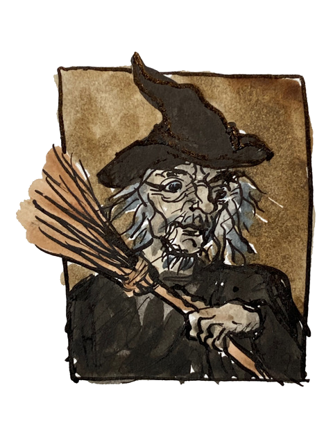
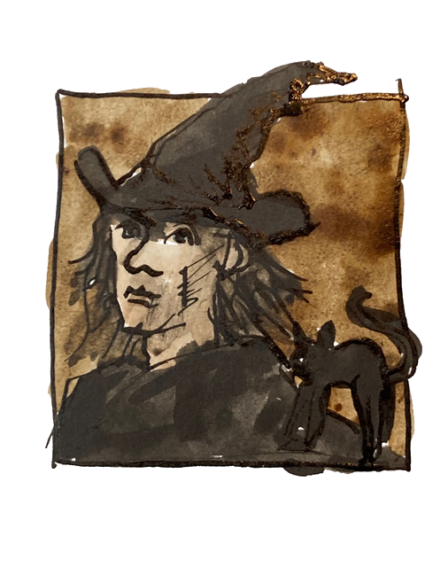
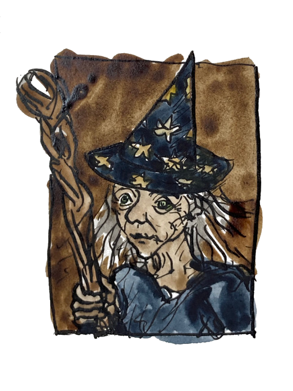

Galleries
Portraits of Witches and Wizards
Here are the portraits of various witches and wizards you can choose for your avatar.
-

An old female witch
-

A young female witch
-

An old male witch
-

A young male witch
-

An old female wizard
-

A young female wizard
-

An old male wizard
-

A young male wizard
Accessories
All witches and wizards need their magical accessories to help them perform their craft effectively. In Terry Pratchett’s Discworld series, witches and wizards can stock up on essentials from Boffo’s Novelty and Joke Shop in Ankh-Morpork. Beware, though. The magic items may look stunning, but they often have unexpected side effects, if they work at all.
But, if you absolutely must accessorise your witch or wizard, then here is a selection of hand picked items for the discerning magical shopper to consider:
When you are using these accessories in your web pages, the catalogue number is the file name you use to reference the image.
-

Magic Wand
A basic wand to cast your spells with.
Catalogue number: wand-magic-duotone-regular-full.svg
-

Faulty Magic Wand
Special Offer. This wand constantly leaks magic and may not cast spells exactly as intended.
Catalogue number: wand-magic-sparkles-sharp-duotone-regular-full.svg
-

Witch’s Hat
A classic black hat for any witch.
Catalogue number: hat-witch-solid-full.svg
-

Wizard’s Hat
A pointy hat with stars for the discerning wizard about town.
Catalogue number: hat-wizard-duotone-solid-full.svg
-

Superior Witch’s Hat
When the plain black hat just won’t do.
Catalogue number: hat-witch-sharp-duotone-regular-full.svg
-

Broomstick
A lightweight and portable broomstick for any witch or wizard who needs to get around quickly. Can also be used for sweeping dusty floors.
Catalogue number: broom-duotone-light-full.svg
-
Heavy Duty Broomstick
A sturdy broomstick for those tough cleaning jobs or long-distance flying. Maximum capacity 2 persons (or 1 wizard if they are of a generous dimension) and a small animal familiar, not including owls as they can fly alongside.
Catalogue number: broom-wide-duotone-regular-full.svg
-
Cauldron
Perfect for brewing potions and magical concoctions. Can be used as a washing up bowl in an emergency. Please wash thoroughly after use.
Catalogue number: cauldron-duotone-light-full.svg
-

Potion Flask
A handy flask for holding potions and magical elixirs. Comes with a secure stopper to prevent spills.
Catalogue number: flask-round-potion-duotone-light-full.svg
-

Spell Book
A well thumbed book containing spells for all occasions. Packed with a variety of enchantments and charms for all skill levels. This edition comes with an appendix of magical curses suitable for advanced practitioners who need to curse at someone.
Catalogue number: book-spine-duotone-regular-full.svg
-
Ever Open Spell Book
Does your spell book ever close just when you get to the important part? This enchanted tome keeps it open for easy reference. N.B. Cannot be stored on a book shelf as it will not close properly.
Catalogue number: book-open-lines-duotone-regular-full.svg
-

Mystic Candle Holder
A candle holder for casting spells at night and creating ambiance during special rituals. Comes with assorted magical candles. Black dribbly candles for evil rites sold separately.
Catalogue number: candle-holder-duotone-light-full.svg
-
Portable Thunderbolt
Useful for summoning thunderstorms on dry days or smiting your enemies. Batteries not included.
Catalogue number: cloud-bolt-sharp-duotone-light-full.svg
-

Cat Familiar
Part of our Fun Familiars range. A friendly cat suitable for any witch. Comes in any colour you like as long as it’s black.
Catalogue number: cat-duotone-light-full.svg
-

Bat Familiar
Part of our Fun Familiars range. A sinister bat for any wizard. The manual states that it drinks blood, but in fact any red coloured liquid will do. Squeaks at night.
Catalogue number: bat-duotone-light-full.svg
-
Raven Familiar
Part of our Fun Familiars range. A wise old bird for any wizard or witch. Known for its intelligence and dry wit. Only one previous owner who taught it to say “Nevermore” and now it won’t stop.
Catalogue number: crow-duotone-solid-full.svg
-

Black Dragon Familiar
Part of our Fun Familiars range. A small black dragon. Breathes fire when angry or upset. Requires regular feeding with coal. Handle with care as it has a tendency to explode when startled.
Catalogue number: dragon-solid-full.svg
-
Green Dragon Familiar
Part of our Fun Familiars range. A small green dragon. This is a newer green upgrade of the black dragon familiar. Instead of coal, it runs on recycled solar and wind energy. Eco-friendly and environmentally conscious.
Catalogue number: dragon-duotone-thin-full.svg
-

Toad Familiar
Part of our Fun Familiars range. A slimy toad. Venomous skin makes it unsuitable for handling. Missing a toe, due to use by witches in creating double toil and trouble.
Catalogue number: frog-duotone-regular-full.svg
-

Spider Familiar
Part of our Fun Familiars range. A large spider. Can creep into surprisingly small spaces. With its many eyes and legs this familiar is perfect for spying on your enemies and running away afterwards.
Catalogue number: spider-duotone-light-full.svg
-

Octopus Familiar
Part of our Fun Familiars range. A highly intelligent octopus. Can solve puzzles and open jam jars with its tentacles. N.B. Do not leave with unattended jam jars or unfinished soduku puzzles.
Catalogue number: octopus-duotone-regular-full.svg